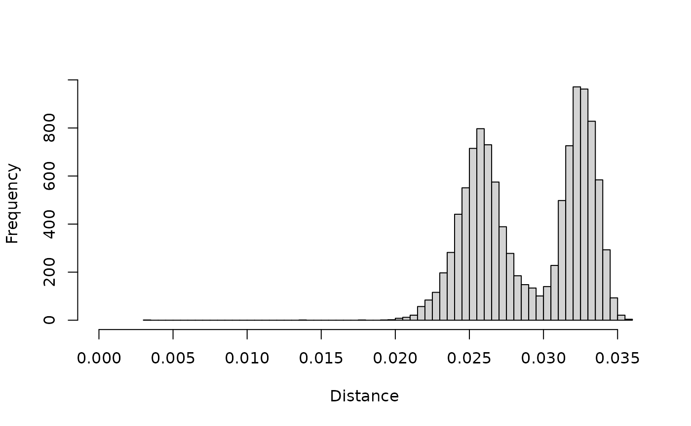
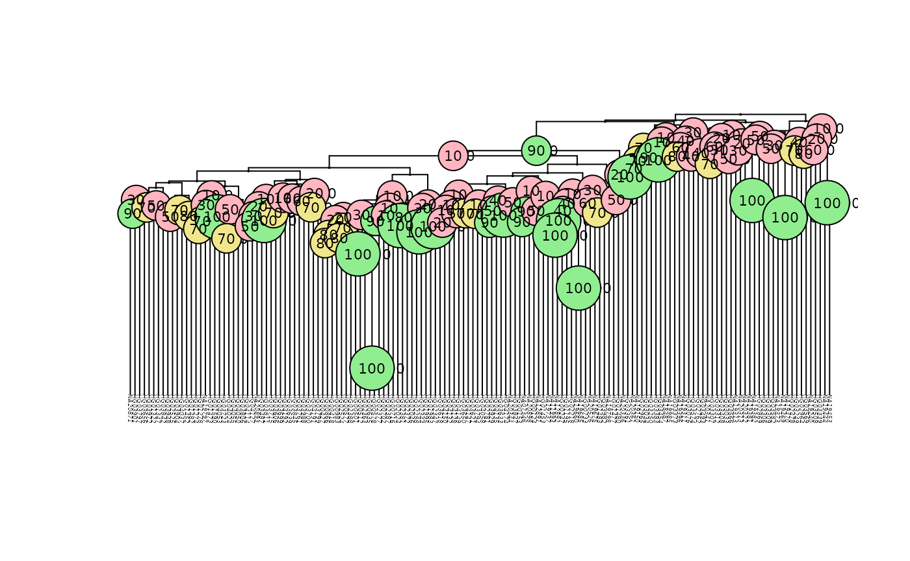
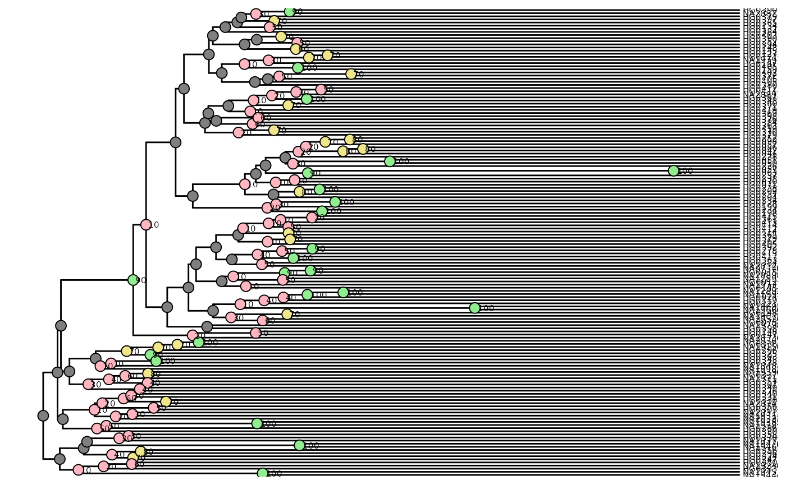

fastreeR Vignette
Anestis Gkanogiannis
anestis@gkanogiannis.com Source:vignettes/fastreeR_vignette.Rmd
fastreeR_vignette.RmdAbout fastreeR
fastreeR provides fast, low-memory routines for
sample-level population genetics on whole VCF or FASTA files: pairwise
distances, phylogenetic trees, and hierarchical clustering, without
loading the data into R. All heavy lifting is performed by a
multi-threaded Java backend; the R package is a thin wrapper that
streams results back.
Typical use cases:
- Exploratory clustering of samples from a large multi-sample VCF.
- Scanning a VCF in windows to spot regions where the sample topology differs (introgression, selection, structural variation).
- k-mer based distances and phylogenies from many FASTA sequences.
Function overview
| Function | Input | Output | Notes |
|---|---|---|---|
vcf2istats |
VCF file |
data.frame of per-sample stats |
het / hom / missing counts and percentages |
vcf2dist |
VCF file |
dist object (or list / data.frame in
windowed mode) |
cosine-type distance; supports windowed output |
vcf2tree |
VCF file | Newick string (or data.frame in windowed mode) |
supports streaming bootstrap replicates |
vcf2clusters |
VCF file | list(tree, clusters) |
vcf2dist + dist2clusters in one call |
fasta2dist |
one or more FASTA |
dist object |
d2_S k-mer dissimilarity |
dist2tree |
dist object / file |
Newick string | hierarchical clustering wrapper |
dist2clusters |
dist object / file |
list(tree, clusters) |
dynamic tree cutting |
tree2clusters |
Newick string / file | cluster assignment | dynamic tree cutting from a tree |
Compressed VCF input
vcf2dist, vcf2tree and related functions
accept either a plain .vcf file or a gzip-compressed
.vcf.gz file transparently — gzip inputs are decompressed
to a temporary file before being handed to the Java backend, as
illustrated by the bundled samples.vcf.gz used throughout
this vignette.
Installation
To install fastreeR package:
if (!requireNamespace("BiocManager", quietly=TRUE))
install.packages("BiocManager")
BiocManager::install("fastreeR")Preparation
Allocate RAM and load required libraries
No more GBs of RAM! Only the distance matrix is kept in memory:
4 bytes x (#samples²) x #threads- Example: 1000 samples with 32 threads → ~128MB RAM
VCF caching is minimal: Only 2 VCF lines per thread are pre-cached.
- In the simple diploid case (e.g.,
0/1,1|0), each genotype requires ~4 characters (8 bytes). - For 1000 samples and 32 threads, this adds up to ~1MB RAM.
JVM will need at least 64-128 MB in order to efficiently run.
Total memory footprint: just a few hundred MB, even for large datasets.
You should allocate minimum 10 bytes per sample per variant of
RAM for the JVM. The more RAM you allocate, the faster the execution
will be (less pauses for garbage collection).
In order to allocate RAM, a special parameter needs to be passed
while JVM initializes. JVM parameters can be passed by setting
java.parameters option. The -Xmx parameter,
followed (without space) by an integer value and a letter, is used to
tell JVM what is the maximum amount of heap RAM that it can use. The
letter in the parameter (uppercase or lowercase), indicates RAM
units.
For example, parameters -Xmx1024m or
-Xmx1024M or -Xmx1g or -Xmx1G,
all allocate 1 Gigabyte or 1024 Megabytes of maximum RAM for JVM.
Download sample vcf file
We download, in a temporary location, a small vcf file from 1K
project, with around 150 samples and 100k variants (SNPs and INDELs). We
use BiocFileCache for this retrieval process so that it is
not repeated needlessly. If for any reason we cannot download, we use
the small sample vcf from fastreeR package.
bfc <- BiocFileCache::BiocFileCache(ask = FALSE)
tempVcfUrl <-
paste0("https://ftp.1000genomes.ebi.ac.uk/vol1/ftp/data_collections/",
"1000_genomes_project/release/20190312_biallelic_SNV_and_INDEL/",
"supporting/related_samples/",
"ALL.chrX.shapeit2_integrated_snvindels_v2a_related_samples_27022019.",
"GRCh38.phased.vcf.gz")
tempVcf <- BiocFileCache::bfcquery(bfc,field = "rname", "tempVcf")$rpath[1]
if(is.na(tempVcf) || is.null(tempVcf)) {
tryCatch(
{ tempVcf <- BiocFileCache::bfcadd(bfc,"tempVcf",fpath=tempVcfUrl)[[1]]
},
error=function(cond) {
tempVcf <- system.file("extdata", "samples.vcf.gz", package="fastreeR")
},
warning=function(cond) {
tempVcf <- system.file("extdata", "samples.vcf.gz", package="fastreeR")
}
)
}
if(!file.exists(tempVcf) || file.size(tempVcf) == 0L) {
tempVcf <- system.file("extdata", "samples.vcf.gz", package="fastreeR")
}Download sample fasta files
We download, in temporary location, some small bacterial genomes. We
use BiocFileCache for this retrieval process so that it is
not repeated needlessly. If for any reason we cannot download, we use
the small sample fasta from fastreeR package.
tempFastasUrls <- c(
#Mycobacterium liflandii
paste0("https://ftp.ncbi.nih.gov/genomes/refseq/bacteria/",
"Mycobacterium_liflandii/latest_assembly_versions/",
"GCF_000026445.2_ASM2644v2/GCF_000026445.2_ASM2644v2_genomic.fna.gz"),
#Pelobacter propionicus
paste0("https://ftp.ncbi.nih.gov/genomes/refseq/bacteria/",
"Pelobacter_propionicus/latest_assembly_versions/",
"GCF_000015045.1_ASM1504v1/GCF_000015045.1_ASM1504v1_genomic.fna.gz"),
#Rickettsia prowazekii
paste0("https://ftp.ncbi.nih.gov/genomes/refseq/bacteria/",
"Rickettsia_prowazekii/latest_assembly_versions/",
"GCF_000022785.1_ASM2278v1/GCF_000022785.1_ASM2278v1_genomic.fna.gz"),
#Salmonella enterica
paste0("https://ftp.ncbi.nih.gov/genomes/refseq/bacteria/",
"Salmonella_enterica/reference/",
"GCF_000006945.2_ASM694v2/GCF_000006945.2_ASM694v2_genomic.fna.gz"),
#Staphylococcus aureus
paste0("https://ftp.ncbi.nih.gov/genomes/refseq/bacteria/",
"Staphylococcus_aureus/reference/",
"GCF_000013425.1_ASM1342v1/GCF_000013425.1_ASM1342v1_genomic.fna.gz")
)
tempFastas <- list()
fallback_fasta <- system.file("extdata", "samples.fasta.gz",
package = "fastreeR")
use_fallback <- FALSE
for (i in seq_len(5)) {
tempFastas[[i]] <- BiocFileCache::bfcquery(bfc, field = "rname",
paste0("temp_fasta", i))$rpath[1]
if (is.na(tempFastas[[i]])) {
path_i <- tryCatch(
BiocFileCache::bfcadd(bfc, paste0("temp_fasta", i),
fpath = tempFastasUrls[i])[[1]],
error = function(cond) NA_character_,
warning = function(cond) NA_character_
)
tempFastas[[i]] <- path_i
}
if (is.na(tempFastas[[i]]) ||
!file.exists(tempFastas[[i]]) ||
file.size(tempFastas[[i]]) == 0L) {
use_fallback <- TRUE
break
}
}
if (use_fallback) {
tempFastas <- fallback_fasta
}Functions on vcf files
Sample Statistics
myVcfIstats <- fastreeR::vcf2istats(inputFile = tempVcf)
plot(myVcfIstats[,7:9])Sample statistics from vcf file
Calculate distances from vcf
The most time consuming process is calculating distances between samples. Assign more processors in order to speed up this operation.
myVcfDist <- fastreeR::vcf2dist(inputFile = tempVcf, threads = 1)Histogram of distances

Histogram of distances from vcf file
We note two distinct groups of distances. One around of distance value 0.05 and the second around distance value 0.065.
Plot tree from fastreeR::dist2tree
Notice that the generated tree is ultrametric.
myVcfTree <- fastreeR::dist2tree(inputDist = myVcfDist)
plot(ape::read.tree(text = myVcfTree), direction = "down", cex = 0.3)
ape::add.scale.bar()
ape::axisPhylo(side = 2)Tree from vcf with fastreeR
Of course the same can be achieved directly from the vcf file, without calculating distances.
myVcfTree <- fastreeR::vcf2tree(inputFile = tempVcf, threads = 1)
plot(ape::read.tree(text = myVcfTree), direction = "down", cex = 0.3)
ape::add.scale.bar()
ape::axisPhylo(side = 2)Tree from vcf with fastreeR
As expected from the histogram of distances, two groups of samples also emerge in the tree. The two branches, one at height around 0.055 and the second around height 0.065, are clearly visible.
Bootstrapping example
You can request streaming bootstrap replicates directly from the VCF
source by setting the bootstrap parameter. The Java backend
will perform the requested number of replicates and encode bootstrap
support values at internal nodes in the returned Newick string. The
following example shows how to call vcf2tree with
bootstrapping and how to inspect the node support values using
ape.
Bootstrap support explained
Setting the bootstrap parameter instructs the Java
backend to resample variants (SNP columns) and compute replicate trees.
The per-node support is calculated as the percentage of replicates that
contain the same bipartition (standard bootstrap). These support values
are encoded in the Newick string returned by vcf2tree and
are accessible after parsing the Newick with
ape::read.tree() (they typically appear in
tree$node.label).
Interpretation guidance
As a rule of thumb, interpret bootstrap values roughly as:
- more than 90% : strong support
- 70-89% : moderate support
- < 70% : weak support
These are heuristic guidelines and should be used with caution.
Reproducibility note
Bootstrap resampling is stochastic and runs inside the Java backend, so support values will vary slightly between runs. For deterministic downstream analyses, save the produced Newick string to disk and re-use it rather than re-running the replicates.
Bootstrap example (small, runnable)
The chunk below runs a modest number of replicates so it is safe for
the vignette build. For production use, set bt_reps to
100-1000; runtime grows roughly linearly with the number of
replicates.
# Small number of replicates for vignette build speed.
# For production: bt_reps <- 200 # or 500-1000
bt_reps <- 10
myBootTree <- fastreeR::vcf2tree(inputFile = tempVcf, threads = 1, bootstrap = bt_reps)
# Parse with ape and inspect bootstrap support (stored in node.label)
tr <- ape::read.tree(text = myBootTree)
# robust parse: remove anything but digits and dot, then as.numeric
raw_lbls <- tr$node.label
node_support <- if (!is.null(raw_lbls)) {
# turn "", NA or non-numeric into NA
s <- gsub("[^0-9.]", "", raw_lbls)
s[s == ""] <- NA
as.numeric(s)
} else {
numeric(0)
}
print(head(tr$node.label))
#> [1] "" "" "" "90" "10" ""
plot(tr, direction = "down", cex = 0.3)
if (length(node_support) > 0) {
# round and show as integers, place without frames
ape::nodelabels(text = round(node_support, 0),
cex = 0.7,
frame = "none",
adj = c(-0.2, 0.5)) # adjust to move labels slightly off-node
# optional: color labels by support
cols <- ifelse(node_support >= 90, "black",
ifelse(node_support >= 70, "orange", "red"))
ape::nodelabels(text = round(node_support, 0), cex = 0.7, frame = "none", col = cols)
# colour the branch behind each internal node
bgcols <- ifelse(node_support >= 90, "lightgreen",
ifelse(node_support >= 70, "khaki", "lightpink"))
ape::nodelabels(text = round(node_support, 0), cex = 0.7, frame = "circle", bg = bgcols, col = "black")
}
Tree from vcf with fastreeR and bootstrap support (ape)
Optional: nicer plotting with ggtree
If you have ggtree installed, you can produce a more
polished plot and annotate node supports.
# internal node numbers are Ntip+1 : Ntip+Nnode
ntips <- ape::Ntip(tr)
nints <- ape::Nnode(tr)
internal_nodes <- (ntips + 1):(ntips + nints)
df_nodes <- data.frame(node = internal_nodes, support = node_support)
# Create categorical support classes for coloring and define colors
df_nodes$category <- cut(df_nodes$support,
breaks = c(-Inf, 69, 89, Inf),
labels = c("weak", "moderate", "strong"))
fills <- c(strong = "lightgreen", moderate = "khaki", weak = "lightpink")
cols <- c(strong = "black", moderate = "orange", weak = "red")
p <- ggtree(tr) + geom_tiplab(size = 2)
# Attach node support data to the tree plotting data and add colored points + labels
p <- p %<+% df_nodes +
ggtree::geom_point2(aes(subset = !isTip, fill = category), shape = 21,
color = "black", size = 3, show.legend = FALSE) +
ggtree::geom_text2(aes(subset = !isTip, label = round(support, 0)),
hjust = -0.2, size = 2, show.legend = FALSE) +
scale_fill_manual(values = fills)
print(p)
Tree from vcf with fastreeR and bootstrap support (ggtree)
Command-line examples
Run from the Python CLI (local JVM memory allocation via
--mem):
python fastreeR.py VCF2TREE -i input.vcf -o output_with_boot.nwk --threads 8 --bootstrap 100 --mem 1024Or using Docker:
docker run --rm -v $(pwd):/data gkanogiannis/fastreer:latest \
VCF2TREE -i /data/input.vcf -o /data/output_with_boot.nwk --threads 8 --bootstrap 100 --mem 1024These commands produce a Newick tree file with bootstrap support
values encoded at internal nodes; parse it in R with
ape::read.tree() to inspect node.label.
JVM / rJava troubleshooting tips
If you encounter rJava initialization errors or
out-of-memory issues when calling vcf2tree() from R, set
the JVM heap before loading the package, for example:
# set JVM max heap to 2GB before loading fastreeR
options(java.parameters = '-Xmx2G')
library(fastreeR)Also ensure Java 11+ is installed and on your PATH. On Windows, point R to the correct Java installation (matching 64/32-bit R) if needed.
Windowed VCF analysis
vcf2dist and vcf2tree can emit one distance
matrix (or Newick tree) per genomic window. This is useful for scanning
a VCF for regions whose sample topology differs from the genome-wide
signal — e.g. candidate introgression blocks, selective sweeps, or
structural variants. Windows are tiled (the step defaults to the window
size) and never straddle chromosome boundaries.
Two window definitions are supported, mutually exclusive:
-
windowBp— windows of N base pairs. -
windowVariants— windows of N consecutive variants.
Bootstrap replicates are not available in windowed mode.
Windowed distance matrices
With the default longFormat = FALSE,
vcf2dist returns a named list of dist objects,
one per window, keyed "chrom:start-end".
win_dists <- fastreeR::vcf2dist(
inputFile = tempVcf,
threads = 1,
windowVariants = 500
)
length(win_dists)
#> [1] 214
head(names(win_dists), 3)
#> [1] "X:12568-254668" "X:254672-263870" "X:263893-276309"Passing longFormat = TRUE returns a long-form
data.frame of all pairwise distances across all windows,
which is convenient for data.table / ggplot2
downstream work:
win_long <- fastreeR::vcf2dist(
inputFile = tempVcf,
threads = 1,
windowVariants = 500,
longFormat = TRUE
)
head(win_long)
#> chrom start end sample_i sample_j dist
#> 1 X 12568 254668 HG00124 HG00501 0.0093654
#> 2 X 12568 254668 HG00124 HG00635 0.0036744
#> 3 X 12568 254668 HG00124 HG00702 0.0015703
#> 4 X 12568 254668 HG00124 HG00733 0.0052516
#> 5 X 12568 254668 HG00124 HG01983 0.0036744
#> 6 X 12568 254668 HG00124 HG02024 0.0063070Windowed trees
vcf2tree in windowed mode returns a
data.frame with one row per window and columns
chrom, start, end, nvariants, newick.
win_trees <- fastreeR::vcf2tree(
inputFile = tempVcf,
threads = 1,
windowVariants = 500
)
head(win_trees[, c("chrom", "start", "end", "nvariants")])
#> chrom start end nvariants
#> 1 X 12568 254668 500
#> 2 X 254672 263870 500
#> 3 X 263893 276309 500
#> 4 X 276312 286997 500
#> 5 X 287001 295546 500
#> 6 X 295586 305146 500
n_show <- min(3, nrow(win_trees))
if (n_show > 0) {
op <- graphics::par(mfrow = c(1, n_show), mar = c(2, 1, 2, 1))
for (k in seq_len(n_show)) {
tr_k <- ape::read.tree(text = win_trees$newick[k])
plot(tr_k, direction = "down", cex = 0.3,
main = paste0(win_trees$chrom[k], ":",
win_trees$start[k], "-", win_trees$end[k]))
}
graphics::par(op)
}Per-window trees from vcf
Plot tree from stats::hclust
For comparison, we generate a tree by using stats
package and distances calculated by fastreeR.
Tree from vcf with stats::hclust
Although it does not initially look very similar, because it is not ultrametric, it is indeed quite the same tree. We note again the two groups (two branches) of samples and the 4 samples, possibly clones, that they show very close distances between them.
Hierarchical Clustering
We can identify the two groups of samples, apparent from the
hierarchical tree, by using dist2clusters or
vcf2clusters or tree2clusters. By playing a
little with the cutHeight parameter, we find that a value
of cutHeight=0.067 cuts the tree into two branches. The
first group contains 106 samples and the second 44.
myVcfClust <- fastreeR::dist2clusters(inputDist = myVcfDist, cutHeight = 0.067)
#> ..done.
if (length(myVcfClust) > 1) {
tree <- myVcfClust[[1]]
clusters <- myVcfClust[[2]]
tree
clusters
}
#> [1] "1 150 HG00124 HG00153 HG00247 HG00418 HG00427 HG00501 HG00512 HG00577 HG00578 HG00635 HG00702 HG00716 HG00733 HG00866 HG00983 HG01195 HG01274 HG01278 HG01322 HG01347 HG01452 HG01453 HG01473 HG01477 HG01480 HG01482 HG01483 HG01590 HG01983 HG01995 HG02024 HG02046 HG02218 HG02288 HG02344 HG02347 HG02363 HG02372 HG02377 HG02381 HG02387 HG02388 HG02478 HG02524 HG02525 HG02762 HG02781 HG02869 HG02964 HG02965 HG03033 HG03034 HG03076 HG03249 HG03250 HG03306 HG03307 HG03309 HG03312 HG03339 HG03361 HG03373 HG03383 HG03408 HG03454 HG03487 HG03493 HG03508 HG03566 HG03569 HG03574 HG03582 HG03606 HG03618 HG03621 HG03633 HG03639 HG03650 HG03656 HG03699 HG03700 HG03715 HG03723 HG03761 HG03794 HG03797 HG03799 HG03806 HG03811 HG03842 HG03845 HG03847 HG03901 HG03904 HG03929 HG03948 HG03972 HG03982 HG03988 HG04024 HG04037 HG04050 HG04053 HG04055 HG04058 HG04114 HG04127 HG04128 HG04132 HG04135 HG04147 HG04149 HG04150 HG04174 HG04191 HG04192 NA07346 NA11993 NA12891 NA12892 NA18487 NA19150 NA19240 NA19311 NA19313 NA19373 NA19381 NA19382 NA19396 NA19444 NA19453 NA19469 NA19470 NA19660 NA19675 NA19685 NA19737 NA19797 NA19798 NA19985 NA20313 NA20322 NA20336 NA20341 NA20344 NA20361 NA20526 NA20871 NA20893 NA20898"Functions on fasta files
Similar analysis we can perform when we have samples represented as sequences in a fasta file.
Calculate distances from fasta
Use of the downloaded sample fasta file :
myFastaDist <- fastreeR::fasta2dist(tempFastas, kmer = 6)Or use the provided by fastreeR fasta file of 48
bacterial RefSeq :
myFastaDist <- fastreeR::fasta2dist(
system.file("extdata", "samples.fasta.gz", package="fastreeR"), kmer = 6)Plot tree from fastreeR::dist2tree
myFastaTree <- fastreeR::dist2tree(inputDist = myFastaDist)
plot(ape::read.tree(text = myFastaTree), direction = "down", cex = 0.3)
ape::add.scale.bar()
ape::axisPhylo(side = 2)Tree from fasta with fastreeR
Session Info
utils::sessionInfo()
#> R version 4.6.0 (2026-04-24)
#> Platform: x86_64-pc-linux-gnu
#> Running under: Ubuntu 24.04.4 LTS
#>
#> Matrix products: default
#> BLAS: /usr/lib/x86_64-linux-gnu/openblas-pthread/libblas.so.3
#> LAPACK: /usr/lib/x86_64-linux-gnu/openblas-pthread/libopenblasp-r0.3.26.so; LAPACK version 3.12.0
#>
#> locale:
#> [1] LC_CTYPE=C.UTF-8 LC_NUMERIC=C
#> [3] LC_TIME=C.UTF-8 LC_COLLATE=C.UTF-8
#> [5] LC_MONETARY=C.UTF-8 LC_MESSAGES=C.UTF-8
#> [7] LC_PAPER=C.UTF-8 LC_NAME=C.UTF-8
#> [9] LC_ADDRESS=C.UTF-8 LC_TELEPHONE=C.UTF-8
#> [11] LC_MEASUREMENT=C.UTF-8 LC_IDENTIFICATION=C.UTF-8
#>
#> time zone: UTC
#> tzcode source: system (glibc)
#>
#> attached base packages:
#> [1] grid stats graphics grDevices utils datasets methods
#> [8] base
#>
#> other attached packages:
#> [1] ggtree_4.1.2 BiocFileCache_3.1.0 dbplyr_2.5.2
#> [4] ape_5.8-1 fastreeR_2.1.6 BiocStyle_2.39.0
#>
#> loaded via a namespace (and not attached):
#> [1] gtable_0.3.6 xfun_0.57 bslib_0.10.0
#> [4] ggplot2_4.0.3 httr2_1.2.2 htmlwidgets_1.6.4
#> [7] rJava_1.0-18 lattice_0.22-9 vctrs_0.7.3
#> [10] tools_4.6.0 generics_0.1.4 yulab.utils_0.2.4
#> [13] curl_7.1.0 parallel_4.6.0 tibble_3.3.1
#> [16] RSQLite_2.4.6 blob_1.3.0 R.oo_1.27.1
#> [19] pkgconfig_2.0.3 ggplotify_0.1.3 RColorBrewer_1.1-3
#> [22] S7_0.2.2 desc_1.4.3 lifecycle_1.0.5
#> [25] stringr_1.6.0 compiler_4.6.0 farver_2.1.2
#> [28] treeio_1.35.0 textshaping_1.0.5 fontLiberation_0.1.0
#> [31] fontquiver_0.2.1 ggfun_0.2.0 htmltools_0.5.9
#> [34] sass_0.4.10 yaml_2.3.12 lazyeval_0.2.3
#> [37] pillar_1.11.1 pkgdown_2.2.0 jquerylib_0.1.4
#> [40] tidyr_1.3.2 R.utils_2.13.0 MASS_7.3-65
#> [43] cachem_1.1.0 fontBitstreamVera_0.1.1 nlme_3.1-169
#> [46] tidyselect_1.2.1 aplot_0.2.9 digest_0.6.39
#> [49] stringi_1.8.7 dplyr_1.2.1 purrr_1.2.2
#> [52] bookdown_0.46 labeling_0.4.3 fastmap_1.2.0
#> [55] cli_3.6.6 magrittr_2.0.5 patchwork_1.3.2
#> [58] dynamicTreeCut_1.63-1 withr_3.0.2 gdtools_0.5.0
#> [61] filelock_1.0.3 scales_1.4.0 rappdirs_0.3.4
#> [64] bit64_4.8.0 rmarkdown_2.31 bit_4.6.0
#> [67] R.methodsS3_1.8.2 ragg_1.5.2 memoise_2.0.1
#> [70] evaluate_1.0.5 knitr_1.51 gridGraphics_0.5-1
#> [73] rlang_1.2.0 ggiraph_0.9.6 Rcpp_1.1.1-1
#> [76] glue_1.8.1 tidytree_0.4.7 DBI_1.3.0
#> [79] BiocManager_1.30.27 jsonlite_2.0.0 R6_2.6.1
#> [82] systemfonts_1.3.2 fs_2.1.0